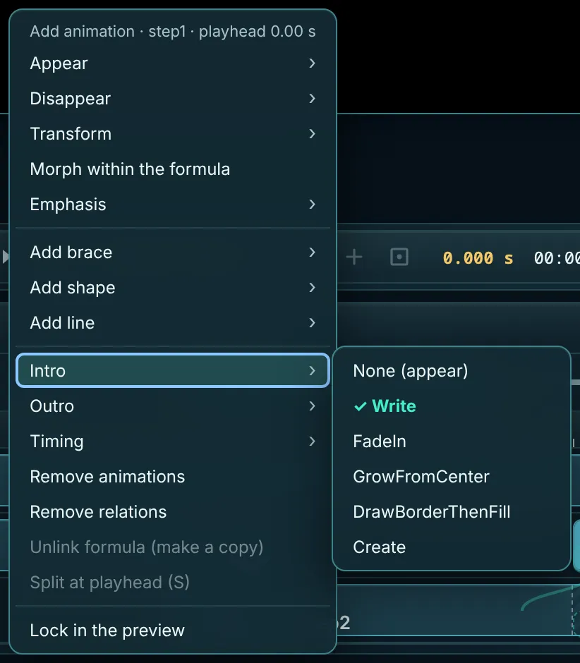
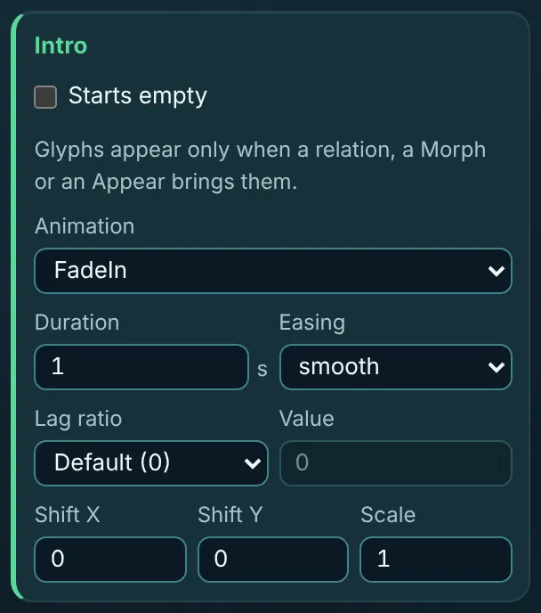
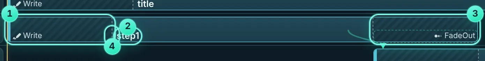
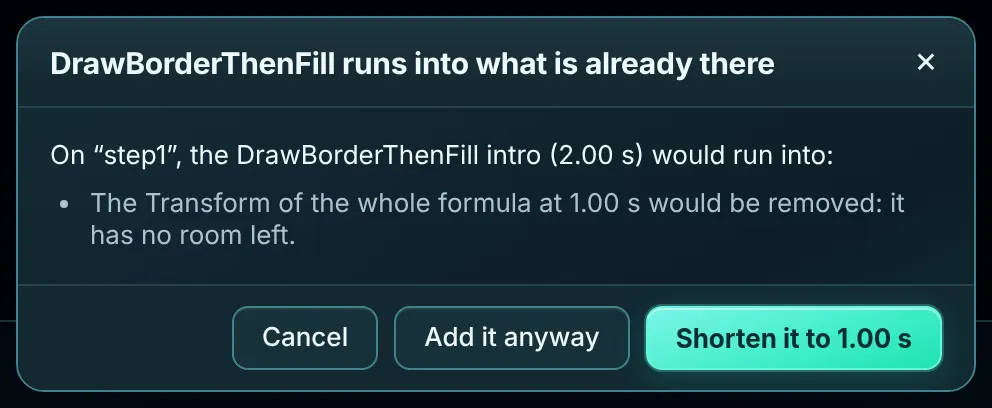
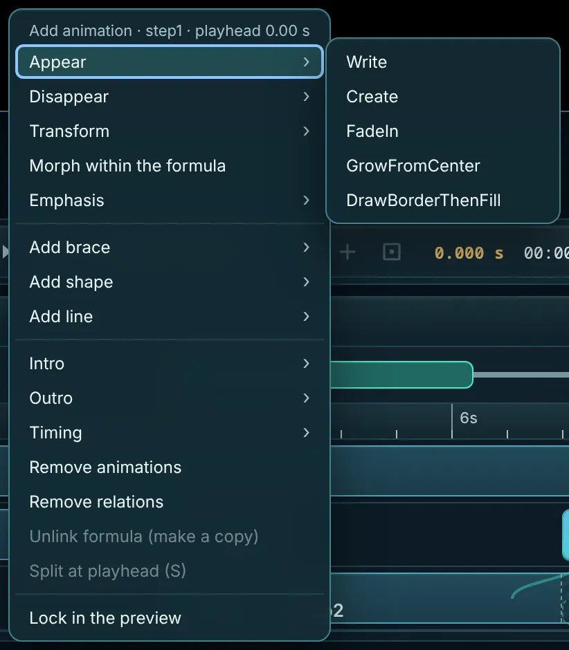
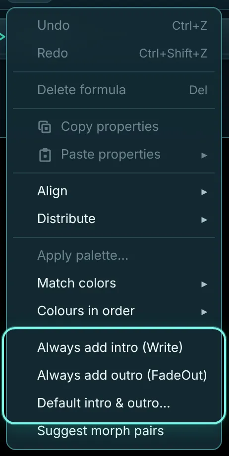
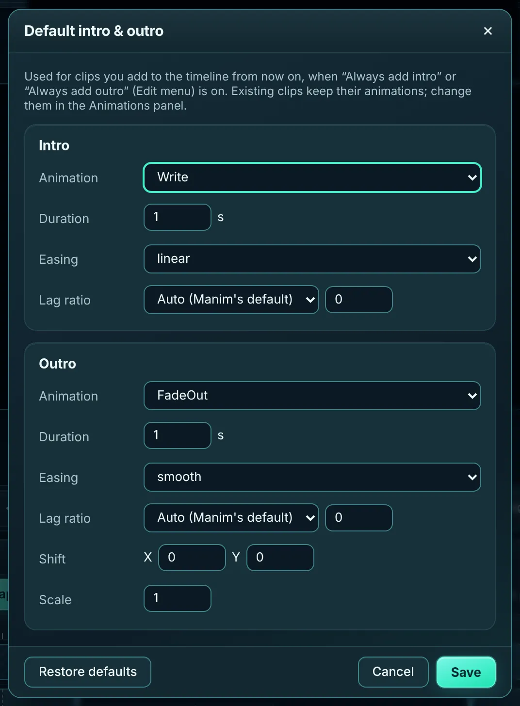
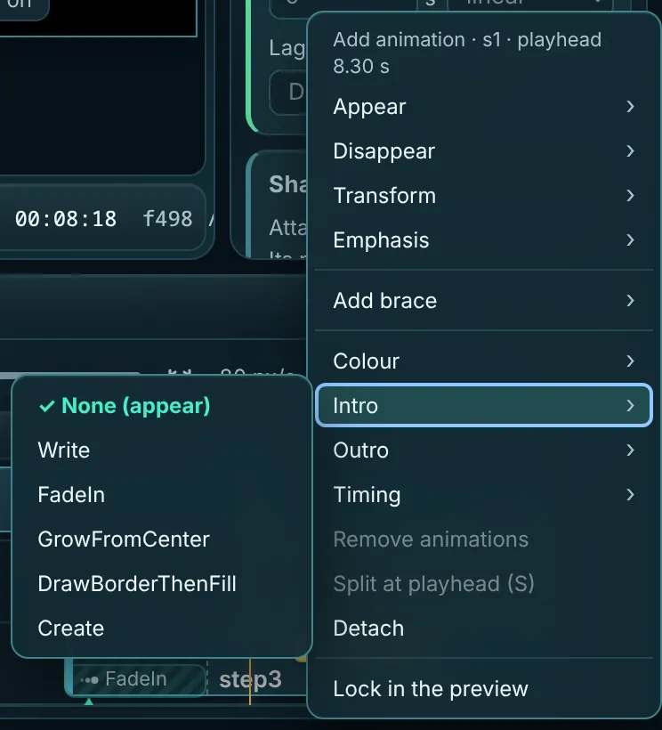

Appearing and disappearing
A clip comes in with an intro and goes away with an outro. This page shows every kind, how to give a clip one and set its length, what happens when one runs into something else on the clip, and what new clips start with.
Without an intro, an object is simply there when its clip starts, and without an
outro it is simply gone when its clip ends. An intro and an outro are Manim
animations (Write, FadeOut…), named by their Manim names in the
app, and they take place inside the clip: the intro in its first seconds, the
outro in its last ones. On the timeline they are the hatched ends of a clip.
The intro
The intro is the animation a clip starts with. It runs from the first instant of the clip for as long as you set, and the clip is at least that long.
| Intro | What it does | Lasts |
|---|---|---|
| None (appear) | Nothing: the object is on screen from the first instant. | — |
| Write | Draws the glyphs stroke by stroke, as if written by hand, each glyph starting a little after the one before. | 1 s |
| FadeIn | Fades the object in. It can start from a shifted place and a different scale. | 1 s |
| GrowFromCenter | Grows the object from a point at its centre to its size. | 1 s |
| DrawBorderThenFill | Draws the outline of each glyph, then fills it. | 2 s |
| Create | Draws the outline progressively. It is the one that suits lines and shapes. | 1 s |
The lengths are what a new intro starts with; you change them (below). An arrow has one more, GrowArrow, which grows it from its start: see Lines and arrows.
The outro
The outro is the animation a clip ends with: it finishes at the last instant of the clip. Each outro undoes an intro, more or less.
| Outro | What it does | Lasts |
|---|---|---|
| None (disappear) | Nothing: the object is on screen until the clip ends, then gone. | — |
| Unwrite | Erases the glyphs stroke by stroke, the opposite of Write. | 1 s |
| FadeOut | Fades the object out, with the same shift and scale as FadeIn. | 1 s |
| ShrinkToCenter | Shrinks the object to a point at its centre. | 1 s |
| Uncreate | Draws the outline backwards until nothing is left. | 1 s |
What each kind of object takes
Not every object can do every animation. The app offers each one only what it can do:
| Object | Intros | Outros |
|---|---|---|
| Formula, text (LaTeX), text (font), brace, shape | none, Write, FadeIn, GrowFromCenter, DrawBorderThenFill, Create | none, Unwrite, FadeOut, ShrinkToCenter, Uncreate |
| Line, dashed line | none, Create, Write, FadeIn | none, Uncreate, Unwrite, FadeOut |
| Arrow, double arrow | those of a line, and GrowArrow | those of a line |
A line is drawn or faded; it has no centre to grow from or shrink to.
Giving a clip an intro or an outro
There are three ways, and each works on its own.
From the clip's menu
Right-click the clip, on the timeline or in the Preview, and open Intro or Outro. The list holds what the object takes; the current choice is ticked. None (appear), in the Intro list, and None (disappear), in the Outro list, take the animation off; any other choice gives the clip that animation, with the length that kind starts with.

Remove animations, in the same menu, takes off the intro, the outro and every animation block of the clip but the Morph ones, in one step.
In the Animations panel
Select the clip and open the Timing tab of the Animations panel. Its Intro and Outro sections have the same list, in Animation, and the numbers behind the animation:

- Duration: how long it lasts, in seconds. It cannot be longer than what the clip leaves beside its other animation.
- Easing: the rate function, the way speed changes along the
animation (
smooth,linear,rush_into…, Manim's own names). - Lag ratio: how much the animation of each glyph waits for the one before it. Default is Manim's own value for that animation, shown in brackets; Custom lets you type one: 0 animates every glyph at once, 1 one after the other.
- Shift X, Shift Y and Scale, for FadeIn and FadeOut only: where the object starts from (or goes to) and how big it is there.
The Intro section of a formula or a text begins with a box, Starts empty. Ticked, no glyph of the clip comes in with the intro: each one appears only when a relation, a Morph block or an Appear block brings it, and a glyph nothing brings never shows. It is for a clip that is the target of a transformation and should show only what was transformed: How relations work has an example. The intro keeps its animation and its time, with nothing to animate; the section says so, and None (appear) frees that time. If an edit later takes away what filled the clip (its relation, say), a notice tells you that the clip will not show. A brace, a shape or a line is one piece, and has no such box.
A clip can also leave only some of its glyphs out of its intro: the first half of a split clip leaves out the glyphs that came on screen after the cut. Its Intro section says how many, under the box: 2 glyphs stay out of the intro. Bring them back gives them to the intro again, as the other glyphs, in one undo step. While Starts empty is ticked every glyph stays out, and the line waits until the box is unticked.
The easings are Manim's rate functions. Each curve below shows how an animation advances over its time, and a dot and a glyph move at that pace:
The select applies the animation at once, and trims the clip's keyframes to make room for it. The menu above is more careful: see When an animation runs into something.
By dragging its edge
The inner edge of an intro or an outro, the dashed line where it ends, is a handle. Its grab zone is the lower part of the clip, a few pixels either side of the line; the cursor turns into a double arrow over it. Drag it to make the animation longer or shorter.

step1 dragged to the right, then to the
left. A readout over the clip gives the animation, where it runs and how long it lasts.- The edge snaps to the playhead, the ticks of the ruler, and the edges of the clip's blocks and windows. Hold Shift to move it freely.
- It stops where the clip says it must. An animation lasts at least 0.05 s, an intro and an outro together cannot be longer than the clip, and neither can run over a Transform of the whole formula (a keyframe), which cannot share its time with them.
- The whole drag is one undo step, and Esc during it cancels it.
- A clip on a locked track is selected by the press and is not changed.
When something lies over an edge
A relation window lies over where an outro starts when a transformation takes glyphs out of the clip at the same moment, and an animation block can lie over an edge too. Pressed there, the window or the block answers, not the handle of the outro.
Hold Alt. While it is down, the edges of the clips and the inner edges of their intros and outros light up, and nothing else in the lanes answers the pointer: not the blocks, not the windows, not the body of a clip. The edge is the clip's again.
step1 to step2 lies over
the start of the outro of step1. Pressed without Alt, the window moves (Esc
puts it back); with Alt held, the same press lengthens the
outro.Alt also frees the edges of the clips themselves, where a block or a window ends with the clip. A dialog or a text field keeps the key for itself, and a locked track shows no lit edges.
When an animation runs into something
An intro or an outro animates the whole object, so it cannot share time with some things on the clip. When you choose one from the clip's menu, the app checks first, and if the new animation, at its own length, would run into any of these it asks:
- a Transform of the whole formula (a keyframe) that it would cut or remove;
- the window of a transformation that takes glyphs from the clip (for an intro) or brings glyphs to it (for an outro);
- a block, or an attached object such as a brace, that needs the same glyphs while the animation runs.

The dialog says what the animation would meet, and you decide:
- Add it anyway gives it the whole length, and the clip is adjusted as far as it can be (a keyframe is cut or removed).
- Shorten it to… is offered when a shorter length avoids everything: the animation lasts only as long as fits.
- Cancel leaves the clip as it was.
When there is no room at all (the clip is all outro, say), a notice says so and nothing changes. If you add one anyway and something is wrong, the Problems section of the Animations panel lists it.
Appear and Disappear blocks
An intro always starts with the clip and an outro always ends with it. To bring glyphs in or take them out at another time, or only some of the glyphs, use an Appear or a Disappear block. Put the playhead at the time you want, right-click the clip or use Add animation in the Animations panel, and choose from Appear or Disappear: the block starts at the playhead.

- Appear: Write, Create, FadeIn, GrowFromCenter and DrawBorderThenFill (and GrowArrow for an arrow). It brings glyphs that are off screen onto it.
- Disappear: FadeOut, Unwrite, Uncreate and ShrinkToCenter. It takes glyphs that are on screen off it, and a glyph it took out comes back with a later Appear.
A line offers only what it can do. A new block lasts as long as that animation does by default, and you drag its edges to change it. It names the glyphs it animates, which you pick in its dialog or in the Animations panel (Animation blocks); a block of an arrow takes all of it (Lines and arrows).
An Appear block makes its glyphs wait
An Appear block brings its glyphs in when it runs, wherever in the clip. Its rule keeps it from fighting with the intro: the glyphs an Appear block names do not take part in the intro. They wait for the block, unless a Disappear block takes them out earlier. The intro animates what no block names, and each block brings in its own glyphs when it runs.
The Python the app exports for that scene shows it. The intro writes the first three glyphs of
the lower formula, a + b, together with the whole upper one; the block fades in
the other two, = c:
# 0.4 s – 1.4 s: alone write, waiting write
self.play(Write(VGroup(*alone_g[:])), Write(VGroup(*waiting_g[:3])), run_time=1)
# ...
# 2 s – 2.8 s: waiting fade_in
self.play(FadeIn(VGroup(waiting_g[3], waiting_g[4])), run_time=0.8)The same applies to glyphs hidden at the start, to every glyph of a clip that starts empty and to glyphs that arrive through a transformation: the intro leaves them out too. If a block names every glyph, the intro has nothing left to animate, and the Animations panel says so, under Warnings: The Write intro of "x" animates no glyph: its glyphs wait for Appear blocks. The scene still plays; the intro is just a leftover you can take off. Blocks are the subject of Animation blocks.
What a new clip starts with
By default a new clip has no intro and no outro: it is there from its first instant to its last. Three settings decide what a new clip gets:
- The formula's own intro. The field Appears with in the formula editor holds the intro every new clip of that formula starts with, and its length. An intro you give a clip from its menu becomes what the formula says from then on. Appears with has its own section in Timing tools.
- The editor's preference. Edit ▸ Always add intro and Edit ▸ Always add outro, both off when you start, give every new clip an intro, an outro or both; the entries name the animation they will use, such as Always add intro (Write). The intro goes to the formulas whose Appears with says Default; the outro goes to every new clip.
- Which animations those are. Edit ▸ Default intro & outro… opens a dialog where you pick the intro and the outro, and set their length, easing, lag ratio and, for fades, shift and scale.


These are preferences of the editor, kept in the browser. They are not part of the project file, and they are not undoable.
Braces, shapes and lines
A brace, a shape or a line you add from a clip's menu comes with no animation: its clip starts, and it is there. Give it one from its own menu, Intro, like any other clip: Create is the one Manim uses for a box, GrowFromCenter or FadeIn suit a brace.

step3 shows at once, and its clip has no hatched
ends. Intro ▸ Create, in the menu of its clip, gives it one.Braces, shapes and lines are the subject of Braces, Shapes and Lines and arrows.
Try it
Where to go next
For a formula that turns into another one, see Transforming one formula into another. Animations that happen during a clip are animation blocks, and Timing tools has the commands that copy a clip's intro and outro lengths.